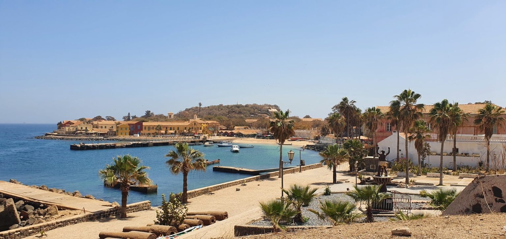

Ngor:L’île de Ngor est plus qu’une simple destination ; c’est une invitation à l’évasion, appréciée tant par les visiteurs internationaux que les locaux. Sa petite taille cache un cœur vibrant de vie, de couleurs et d’activités, rendant chaque visite inoubliable.
Que savoir sur ce lieu
- Comment accéder à Ngor ?
- Oslo:Située à une courte distance de la côte de Dakar, l’île de Ngor est facilement accessible par pirogue, offrant une aventure dès le départ. Ses plages encerclent un cœur verdoyant, tandis que sa position lui confère un microclimat agréable tout au long de l’année. En effet, Ngor est située au large de la presqu’île du Cap-Vert, à la pointe ouest de Dakar. L’accès à l’île est facile et rapide grâce aux pirogues qui font des navettes régulières depuis le village de Ngor sur le continent. La traversée, qui ne prend que quelques minutes, ajoute une touche d’aventure au voyage. Une fois sur place, les visiteurs peuvent explorer l’île à pied, découvrant ses charmants sentiers et ses vues imprenables sur l’océan Atlantique..

- Quelle est l’histoire de l’île de Ngor ?:L’île de Ngor, avec ses ruelles sinueuses et ses maisons colorées, est imprégnée d’une riche histoire et d’une culture vibrante. Les récits des anciens et l’architecture témoignent de son passé, tandis que les festivals et les événements culturels célèbrent son héritage. L’île de Ngor possède une histoire riche et fascinante. Autrefois un refuge pour les pêcheurs locaux, Ngor a conservé son essence authentique tout en s’ouvrant au monde extérieur. L’architecture traditionnelle, mêlée à des influences plus modernes, raconte l’évolution de l’île à travers les siècles. La culture locale est omniprésente, avec des artisans et des artistes qui exposent leurs œuvres, reflétant la créativité et la vivacité culturelle de Ngor. Les traditions sénégalaises sont célébrées à travers la musique, la danse et les festivals qui ponctuent l’année.